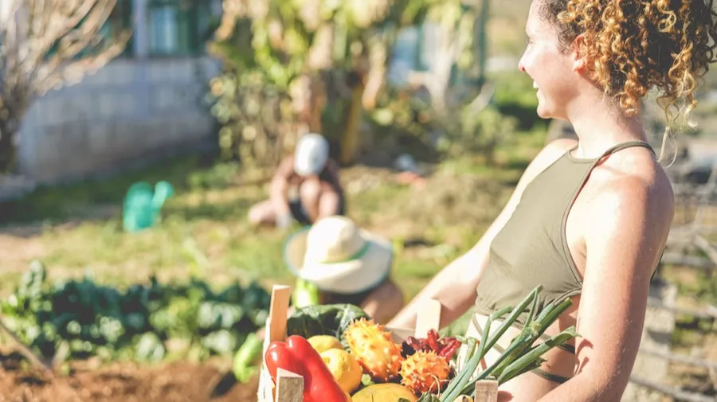

Sustentabilidade é um conceito essencial que visa garantir que as necessidades atuais sejam atendidas sem comprometer a capacidade das gerações futuras de atender às suas próprias necessidades. É um termo que abrange várias áreas, incluindo meio ambiente, economia e sociedade, e busca alcançar um equilíbrio entre essas áreas para garantir um futuro sustentável para todos.
A sustentabilidade é fundamental para garantir que o meio ambiente seja protegido e preservado para as gerações futuras. A nossa atividade humana pode ter um grande impacto negativo no meio ambiente, incluindo mudanças climáticas, desmatamento, poluição e perda de biodiversidade. A sustentabilidade procura reduzir esses impactos e promover a conservação do meio ambiente, para garantir que o planeta continue a ser um lugar habitável para todos os seres vivos.
No entanto, a sustentabilidade não se trata apenas de proteger o meio ambiente. Também é importante garantir que a economia e a sociedade sejam sustentáveis. Isso significa que precisamos encontrar maneiras de garantir que as pessoas possam viver e trabalhar de maneira justa e equitativa, sem esgotar os recursos naturais do planeta ou comprometer a capacidade das gerações futuras de atender às suas próprias necessidades.
Uma das formas de alcançar a sustentabilidade é por meio da utilização de energia renovável. Isso significa que precisamos reduzir nossa dependência de combustíveis fósseis e mudar para fontes de energia renovável, como solar, eólica e hidrelétrica. Essas fontes de energia são renováveis e podem ser utilizadas indefinidamente, sem causar danos ao meio ambiente.
Outra maneira de promover a sustentabilidade é através da conservação da água. A água é um recurso limitado e essencial para a vida humana, mas muitas vezes é utilizada de maneira insustentável, resultando em escassez de água em muitas partes do mundo. Precisamos encontrar maneiras de reduzir nosso uso de água e garantir que a água seja utilizada de maneira eficiente e sustentável.
A reciclagem também é uma parte importante da sustentabilidade. A reciclagem reduz a quantidade de lixo que produzimos e ajuda a preservar os recursos naturais do planeta. Ao reciclar, podemos reduzir a quantidade de energia necessária para produzir novos materiais e reduzir a quantidade de poluição que produzimos.
A sustentabilidade também se aplica à nossa vida cotidiana. Podemos tomar medidas para reduzir nosso impacto no meio ambiente, como usar transporte público, andar de bicicleta ou caminhar em vez de dirigir, usar produtos reutilizáveis em vez de descartáveis, e reduzir nosso consumo de energia e água.
A sustentabilidade não é algo que possa ser alcançado sozinho. É uma tarefa que requer a cooperação de governos, empresas e indivíduos em todo o mundo. Precisamos trabalhar juntos para encontrar soluções sustentáveis para os desafios ambientais, econômicos e sociais que enfrentamos.